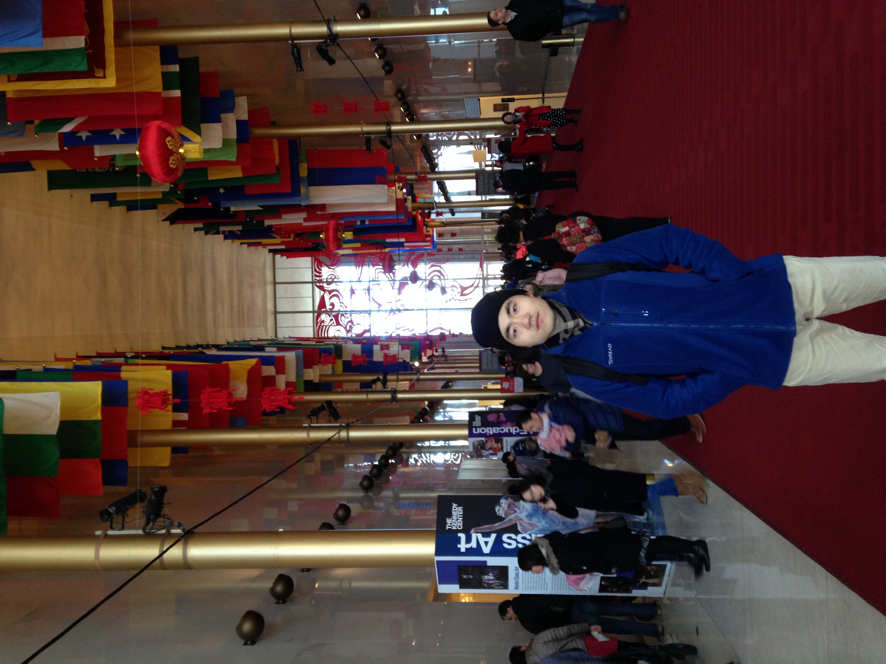

I'm Yuchen.
Student at The University of Michigan.
About Me
Hello! My name is Yuchen. I am a Junior at The University of Michigan currently pursuing a Data Science major through the College of Literature, Science, and the Arts. I am very passionate about contributing back to my community and helping teach others about data science. In addition to my major, I am also interested in philosophy, cognitive science, nutrition, the arts, and physics. My hobbies include cycling, listening music, cooking, extensive reading, and visiting art museums.
This year I have just completed an introductory computer science course offered at UofM. Within this course, I was able to not only learn how to build several projects including a simulated elevator game, but also acquire strong foundational skills on approaching programming problems. The course was taught in C++, and I have worked with a variety of group members throughout the semester. From this class and others, I have gained the ability to collaborate effectively despite difficulties in the virtual setting.
In addition to C++, I have applied R on my statistic courses and on projects with Michigan Data Science Team. I am really excited about data analysis skills I learned and hope to contribute to more positive changes through solving more real-world problems.
Education
University of Michigan Ann Arbor
College of Literature, Science and the ArtsClass of 2022
- Major: Data Science
- Courses Taken (Major Related):
- Organizations:
Computer Science & Programming: Elementary Programming Concepts
Statistics: Intro to Statistics and Data Science, Probability, Mathematical Statistics, Applied Regression
Math: Applied Linear Algebra, Multi-variable & Vector Calculus, Differential Equation, Discrete Math
Central Student Governement-Sustainability Group
The Michigan Student Artificial Intelligence Lab
Michigan Data Science Team
Experience
Research Projects:
The Influence of Iron Metabolism on T-cells in Immune Response
Feb 2019 - May 2020
- Analyzed genetic expression data collected from over 30,000 microarrays on T-cells via Limma package on R to identify iron-regulating genes
- Applied Petri-net and logic models to establishment of T-cells’ iron-regulating proteins network based on genetic pathway analysis on Reactome
- Simulated mathematical models for proteins network under different levels of iron concentration to represent impact of iron on T-cells’ immune activities
Awards
Certificate of Achievement
EECS 183: Elementary Programming ConceptsFall 2020 Semester
Contact Me
I am always open to chat about new opportunities and my passions.
Feel free to reach out to me at any of these links
Ann Arbor, MI
Phone: +1 (734)-846-2997
Email: yuchenma@umich.edu